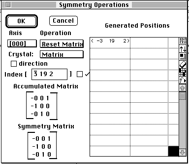

Distributed By: Virtual Labs
Add Spots By Symmetry Dialog Box
PATH...{Stereographic Projection Object}:Function Menu:Add Spots By
Symmetry...
This dialog box allows the user to add a set of spots based on a selected
set of symmetry operations. These operations preform the required the requested
symmetries based on a set of matrix operations as defined in
Space Groups for Solid State Scientists . These operations are completed
irrespective of the supporting symmetry of the the crystal lattice.

Author: J.ames
T. Stanley
 Desktop
Manual:Dialog Boxes
Desktop
Manual:Dialog Boxes
Distributed By: Virtual Labs
Last Updated:1/12/96 Sat, Apr 27, 1996